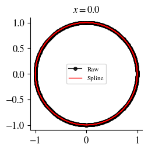
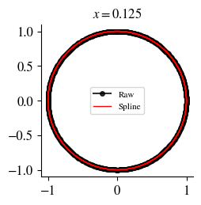
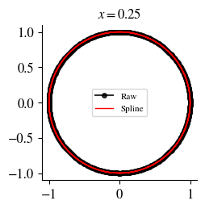
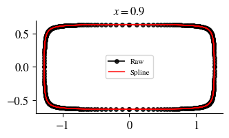
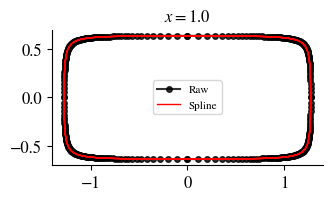
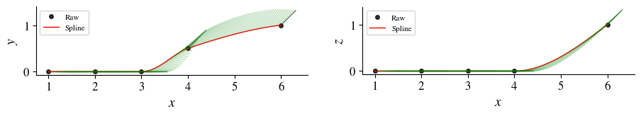
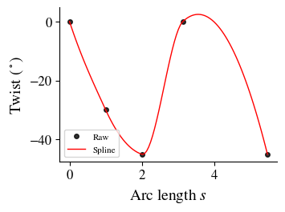

Path-Lofting Method
The following function in GeometricTools lofts a set of contours along a path. This method uses an Akima spline to extrapolate in between the contours and path points supplied by the user, which resembles the flexibility of NURBs but without weights in order to make the process simpler for the user.
GeometricTools.surface_pathloft — Functionsurface_pathloft(sections, section_NDIVS, path_NDIVS, path; injective_coordinate=1, loop_dim=0, nperiodic=2, redisc_optargs=[], verify_spline=true, save_path=nothing, paraview=true, file_pref="pathloft")
Generation of a surface grid by lofting a set of sections along a path.
sections is an array where sections[i] = (spos, points) is the i-th contour made out of the 2xn matrix points that goes along the path in the nondimensional arc-length position spos (a number between 0 and 1, where 0 is the start of the path and 1 is the end of the path). path is an array where path[i] = (X, n, twist) is the i-th point along the path placed at X in the global coordinate system and the cross section passing through this point will be oriented according to the normal vector n and twisted by twist (in degrees). The number of points in path does not need to match the number of sections in sections
This function rediscretizes the sections as indicated by section_NDIVS, which could be an array of multidiscretization parameters to apply to each section, a single multidiscretization parameter set for all the sections, or an integer with the number of points used to discretize all sections. Similarly, path_NDIVS indicates the desired discretization of the x-position along the path.
Contours can either be closed or open, and the discretization will automatically recognize and preserve that. Contours must be concave.
sections has the format sections[i] = (spos, points) where points is the nx2 matrix of n contours points (y, z) of each section, and spos is the nondimensional position along the path of each section.
path has the format path[i] = (X, normal, twist), where X is the position of the i-th point (a vector of length 3), normal is a the normal of cross sections at that position (a vector of length 3), and twist is the twist of the cross section at that position (in degrees). injective_coordinate is the coordinate that makes the path injective.
surface_pathloft(sections::Vector{Tuple{<:Real, String}}, data_path::String, args...; header_len=1, delim=",", optargs...)
Loft a geometry where the sections are read from the files indicated by sections found in data_path.
sections has the format sections[i] = (xpos, filename) where filename is the CSV file containing the (y, z) contours of each section, and xpos is the nondimensional position along the path of each section.
Example
In this example we read two conic sections from a CSV and define a loft path to generate a lofted surface grid. This animation shows the path of the loft ( points in black, normals in green, path spline in red):

import GeometricTools as gt
import FLOWPanel: examples_path
import CSV
import DataFrames: DataFrame
save_path = "pathloft-example" # Where to save grid VTK
contour_path = joinpath(examples_path, "data") # Where to read the conic contour from
# ------------ Define contours of loft -----------------------------------------
# Read conic contours for loft
points1 = CSV.read(joinpath(contour_path, "conicsection1.csv"), DataFrame)
points1 = Matrix(points1)
points2 = CSV.read(joinpath(contour_path, "conicsection2.csv"), DataFrame)
points2 = Matrix(points2)
# Define loft sections
sections = [ # (non-dimensional arclength position along path, contour)
(0.000, points1),
(0.125, points1),
(0.250, points1),
(0.800, points2),
(0.900, points2),
(1.000, points2)
]
# ------------ Define loft path ------------------------------------------------
# Points along path
path_Xs = [
[1.0, 0, 0],
[2.0, 0, 0],
[3.0, 0, 0],
[4.0, 0.5, 0],
[6.0, 1, 1]
]
# Section normals along path
path_normals = [
[1, 0, 0],
[1, 0, 0],
[1, 0, 0],
[1, 1, 0]/sqrt(2),
[1, 1, 1]/sqrt(3)
]
# Twist of section contours along path
path_twists = [0, -30, -45, 0, -45]
# Collect the path
path = collect(zip(path_Xs, path_normals, path_twists))
# ------------ Generate lofted surface grid ----------------------------------
# Define discretization
section_NDIVS = 200 # Discretization of section contours
path_NDIVS = 100 # Discretization of path
# Generate loft
grid = gt.surface_pathloft(sections, path,
section_NDIVS, path_NDIVS; save_path=save_path, paraview=true)surface_pathloft(...; verify_spline=true, ...) automatically generates the following plots for the user to verify that the spline is correctly fitting the raw contours and path. Here are the contours:
|  |  |  |
|  |  |
The path is visualized showing the $x-y$ and $x-z$ coordinates of the path points and normals, as shown below:
|  |
Also the contour twist is shown along the dimensional length of the path:
|  |
surface_pathloft(...; paraview=true, ...) calls ParaView after generating the grid to visualize the loft: